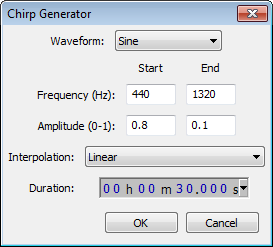
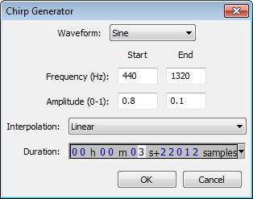
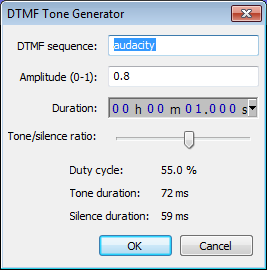
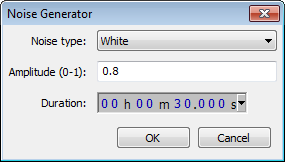
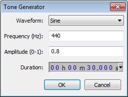

Generate Menu
From Audacity Manual
Although by default, no keyboard shortcuts are provided for the generators, it is possible to create your own shortcut for any Generate command. See Keyboard Preferences for help with creating shortcuts.
Audacity's Generators
- There are five related built-in generators: Chirp, DTMF, Noise, Silence and Tone.
- There are three plugin generators: Click Track, Pluck and Risset Drum. Other plugins can be added in various formats.
Using Audacity's Generators
- Generate audio into a new track: If there are no existing tracks, choose the required generator. If there are existing tracks, click outside the tracks (in the gray background) to deselect them, then Generate.
- Insert generated audio at the cursor position: Place the cursor in the track then Generate. The specified duration of audio will be inserted into the selected track(s) at the cursor position. The total length of the selected track(s) will therefore be increased.
- Replace an existing selection with generated audio: Select the region then Generate. The selected region(s) will be replaced with the generated audio. The total length of the selected track(s) will remain the same, unless you change the length in the generator to replace the selection with a longer or shorter one.
Amplitude
All built-in generators (except of course Silence) let you type an amplitude value for the loudness of the generated audio. Permitted values are between 0 (silence) and 1 (the maximum possible volume without clipping), with a default of 0.8.
Duration
Type (or use the keyboard arrows) to enter the required Duration. If the first digit you want is highlighted, just type the whole number. If the required first digit is not highlighted, use LEFT or RIGHT arrow on your keyboard to move to the first digit, then type. You can also increment a highlighted digit with keyboard UP or DOWN arrow instead of typing.
- When generating at the cursor, Duration initializes to 30.000 seconds (except for the DTMF generator which defaults to 1.000 second). However, your last entered Duration is always remembered.
- When replacing a selection region, Duration always displays the exact duration of that selection to the nearest audio sample.
Selection Format for Duration
Whether generating in a selection or not, you can change the Selection Format to another unit of Duration so that the generation will be in those units. To do this, open the context menu by clicking the triangle to right of the digits. You can also open the menu by hovering over or selecting in the Duration digits, then right-clicking or using a keyboard equivalent.
Examples of Generator Usage
See this page for some examples of using the Audacity generators.
Built-in Generators
Chirp...
- 
Chirp produces four different types of tones like the Tone Generator but additionally allows setting of the start and end amplitude and frequency. Short tones can be made to sound very much like a bird-call. As with Tone, frequencies can be specified anywhere between 1 Hz and half the current project rate as shown in Selection Toolbar.
DTMF Tones...
- 
Generates dual-tone multi-frequency (DTMF) tones like those produced by the keypad on telephones. For each tone you wish to generate, enter numbers from 0 to 9, lower case letters from a to z, and the * and # characters. You can also enter the four "priority" tones used by the US Military (upper case A, B, C and D).
Use the slider to select the ratio between the length of each tone in the series and the length of the silences between them. This ratio is displayed underneath the slider as the "duty cycle" along with the resulting duration of each tone and silence. Changing the DTMF Duration changes the duration of each tone and silence while retaining the ratio between them.
For example, if you generate four tones in a sequence lasting four seconds, choosing a duty cycle of 50% in order to make the tones and silences of equal duration, the four tones and the three silences between them will all be 571 milliseconds long.
Noise...
- 
Generates one of three different types of noise. White noise is that which has the greatest ability to mask other sounds, as it has similar energy at all frequency levels. Pink noise and Brownian noise both have more energy at lower frequencies, especially Brownian, which has the most muffled, low pitched sound of the three types. By their nature, pink and Brownian noise may have a few peaks not exactly at the requested amplitude if the tracks are only a few seconds long.
Silence...

Generates audio of zero amplitude, the only configurable setting being duration. When applied to an audio selection, the result is identical to .
Tone...
- 
Generates one of four different tone waveforms. The name of each tone roughly describes its appearance when zoomed in sufficiently to see each cycle of the waveform.
- Sine: A mathematical curve that describes a smooth repetitive oscillation. It contains no overtones so sounds very "pure".
- Square: Has fixed maximum and minimum values of identical duration with a near-vertical line between them, giving a characteristic "castle turret" shape. It contains every other overtone. Square waves are distinguished by having identical peak and RMS levels and so their waveforms show as entirely light blue when zoomed out.
- Sawtooth: Has a gradual upwards slope followed by a shorter downwards slope. It contains all overtones, so sounds very "nasal", "bright" and penetrating.
- Square (no alias): Similar to the Square wave but does not produce aliasing distortion. This makes it take longer to generate the tone.
As with Chirp, frequencies can be specified anywhere between 1 Hz and half the current project rate as shown in Selection Toolbar. One half is the maximum because any given sample rate can only carry frequencies up to half that rate. Although frequencies above 20000 Hz cannot be heard by most humans, generating at up to half the sample rate (22050 Hz at Audacity's default 44100 Hz) can have scientific uses, for example in measuring impulse responses.
Plugin Generators
Any additional generators which appear underneath the menu divider are Nyquist or LADSPA plugins. Audacity includes the following three Nyquist generators, but more are available on Download Nyquist Plugins on our Wiki.
| Nyquist generators do not usually take the length of selected audio as the length of the audio to be generated. Instead, specify the length required in the appropriate input field(s) of the plugin. Any selected audio will be replaced by the length of audio specified in the plugin, thus the total length of the track(s) will change unless the selected and specified lengths are identical. |
Click Track...
Generates a track with regularly spaced sounds at a specified tempo and number of beats per measure (bar). It can be used like a metronome for setting a steady beat against which an overdub recording can be made.
Pluck...
A synthesized pluck tone with abrupt or gradual fade-out, and selectable pitch corresponding to a MIDI note.
Risset Drum...
Produces a realistic drum sound consisting of a sine wave ring-modulated by narrow band noise, an enharmonic tone and a relatively strong sine wave at the fundamental.